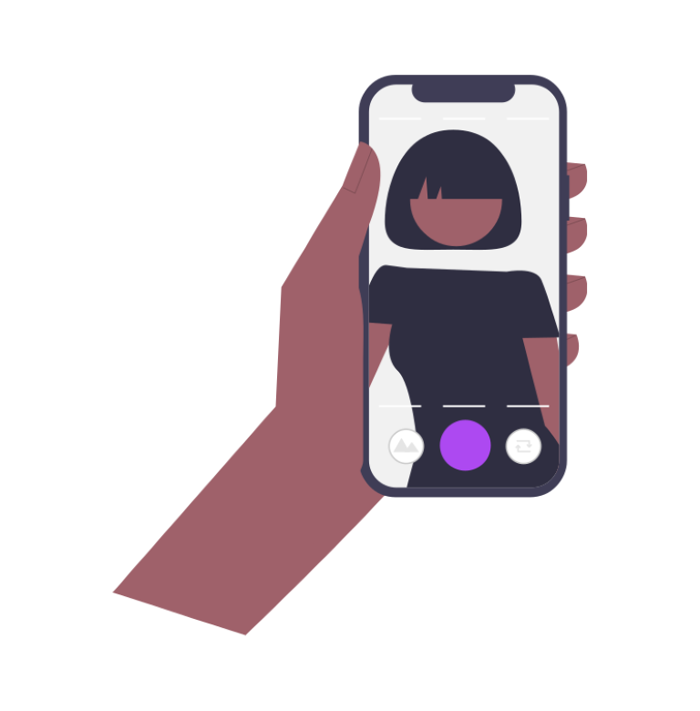

{% extends "backstage.html" %}

{% block style %}
    <style>
        .alert-duration sl-alert {
        margin-top: var(--sl-spacing-medium);
        }
    </style>
{% endblock %}

{% block table %}
    <!-- <div class="h1">Welcome!</div> -->
    <!-- </img> -->
    <sl-dialog label="Dialog" class="dialog-no-overlay-dismiss">
        This dialog will not be closed when you click outside of it.
        <sl-button slot="footer" type="primary">Close</sl-button>
      </sl-dialog>
      
      <a>Open Dialog</a>
      
      
    
{% endblock %}

{% block script %}
<script>
    const dialog = document.querySelector('.dialog-no-overlay-dismiss');
    const openButton = dialog.nextElementSibling;
    const closeButton = dialog.querySelector('sl-button[slot="footer"]');
  
    openButton.addEventListener('click', () => dialog.show());
    closeButton.addEventListener('click', () => dialog.hide());
  
    dialog.addEventListener('sl-overlay-dismiss', event => event.preventDefault());
</script>
{% endblock %}

